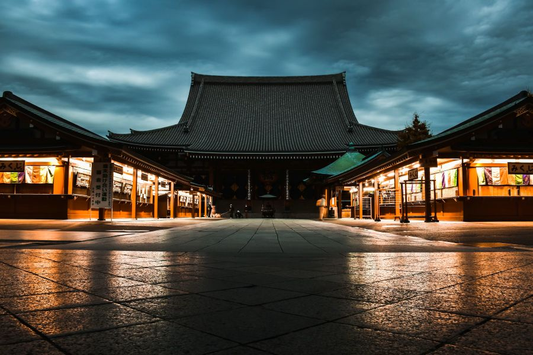

DESIGNING CARD

• CALM AND STEADY •
Beauty is found in the balance between the storm and the steady. Just as these pillars stand firm beneath a restless sky, a true seeker remains grounded in logic while the world shifts around them. It is a reminder that strength isn't about the absence of clouds, but the resilience of the foundation.A perfect blend of symmetry and soul. This structure represents the core of every great system: an unshakable foundation, intricate design, and the courage to face the dark clouds of uncertainty with a steady light. Storms are temporary, but foundations are forever. This architecture stands as a silent witness to the power of precision.In a world of shifting clouds, be the pillar that never wavers. Built by logic, illuminated by grace.